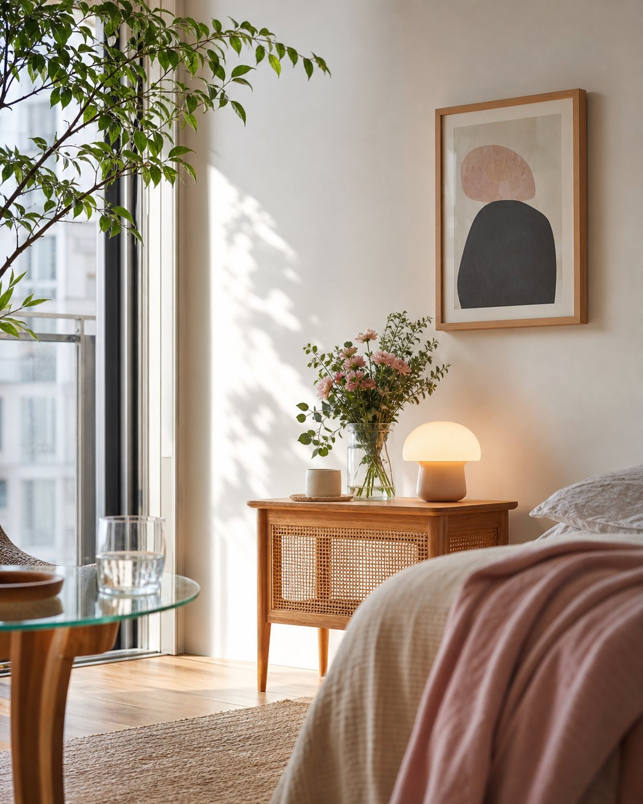

Room styling
Room styling
Pinterest Lifestyle Edit
「なんかいい部屋」には、ちゃんと理由がある。
大きな模様替えはいりません。清潔感・余白・抜け感。この3つが揃うと、部屋は不思議と感じよく見えます。同年代の編集者の目で選んだものを、楽天で買える“1商品1ページ”に分解しました。Home Decorを軸に、DIY・ビューティー・ファッションまで。

About
このサイトについて
同年代の男性編集者が、第三者の目線で「感じがいいな」と思った暮らしの道具を集めています。狙いは見せるための演出でも“ウケ狙い”でもなく、誰が来ても自然に整って見える部屋。Pinterestで見つけた雰囲気を、楽天で実際に試しやすい1商品1ページで紹介しています。
Latest Picks
印象が変わる、最初の10アイテム


Main Theme
Home Decorから始める、「感じのいい部屋」。
大きな家具を買い替えなくても、ライト、壁飾り、花瓶、サイドテーブルで部屋の印象は変えられます。最初に目がいくのは、生活感が出やすい一角。来客の視線が止まる場所でもあります。写真にも写るその一角から整えるのが、いちばん効率がいい。